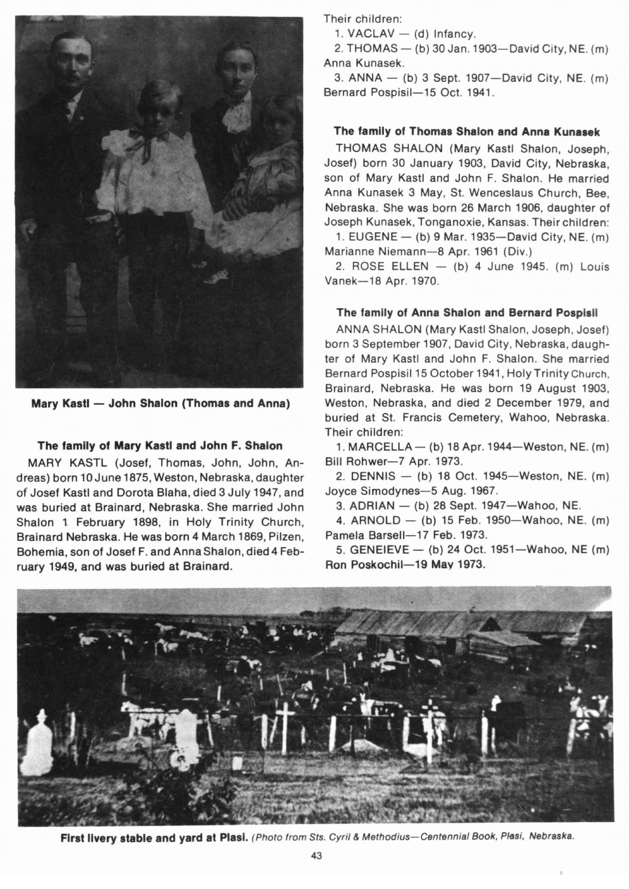
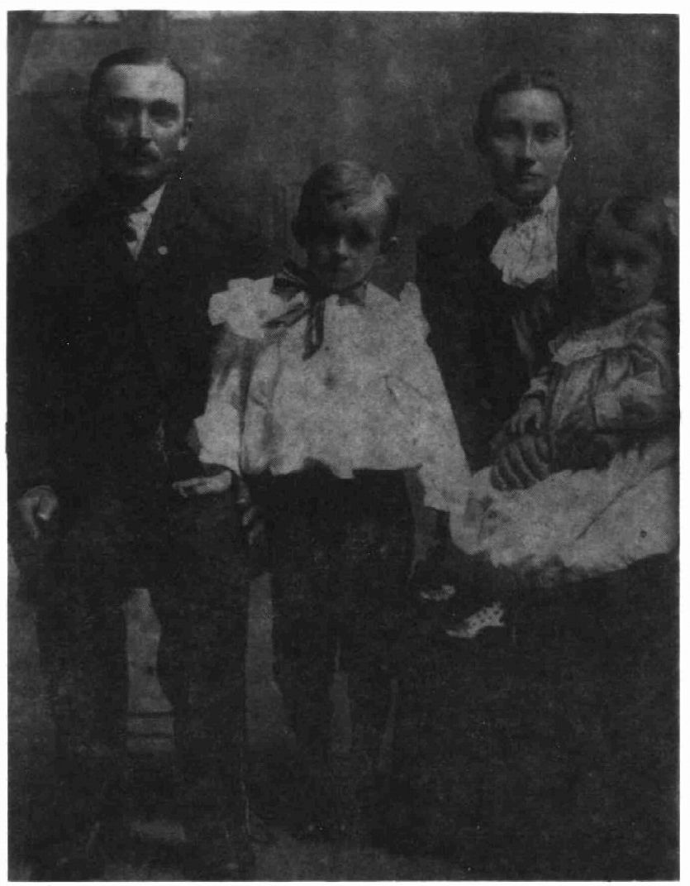
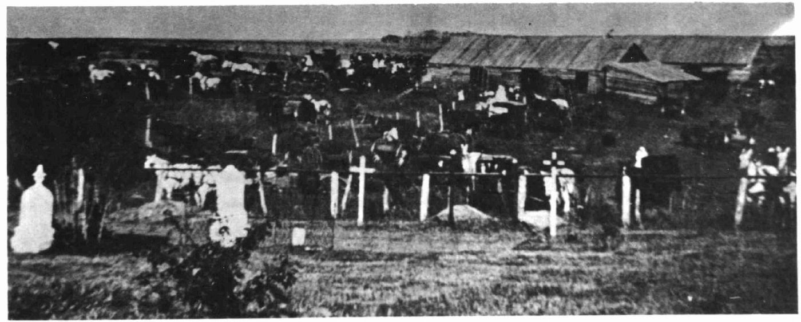

The book · The Family of Joseph Kastl
Page 43 The family of Mary Kastl and John F. Shalon


Transcription


The family of Mary Kastl and John F. Shalon
MARY KASTL (Josef, Thomas, John, John, Andreas) born 10 June 1875, Weston, Nebraska, daughter of Josef Kastl and Dorota Blaha, died 3 July 1947, and was buried at Brainard, Nebraska. She married John Shalon 1 February 1898, in Holy Trinity Church, Brainard Nebraska. He was born 4 March 1869, Pilzen, Bohemia, son of Josef F. and Anna Shalon, died 4 February 1949, and was buried at Brainard.
Their children:
- VACLAV — (d) Infancy.
- THOMAS — (b) 30 Jan. 1903—David City, NE. (m) Anna Kunasek.
- ANNA — (b) 3 Sept. 1907—David City, NE. (m) Bernard Pospisil—15 Oct. 1941.
The family of Thomas Shalon and Anna Kunasek
THOMAS SHALON (Mary Kastl Shalon, Joseph, Josef) born 30 January 1903, David City, Nebraska, son of Mary Kastl and John F. Shalon. He married Anna Kunasek 3 May, St. Wenceslaus Church, Bee, Nebraska. She was born 26 March 1906, daughter of Joseph Kunasek, Tonganoxie, Kansas. Their children:
- EUGENE — (b) 9 Mar. 1935—David City, NE. (m) Marianne Niemann—8 Apr. 1961 (Div.)
- ROSE ELLEN — (b) 4 June 1945. (m) Louis Vanek—18 Apr. 1970.
The family of Anna Shalon and Bernard Pospisil
ANNA SHALON (Mary Kastl Shalon, Joseph, Josef) born 3 September 1907, David City, Nebraska, daughter of Mary Kastl and John F. Shalon. She married Bernard Pospisil 15 October 1941, Holy Trinity Church, Brainard, Nebraska. He was born 19 August 1903, Weston, Nebraska, and died 2 December 1979, and buried at St. Francis Cemetery, Wahoo, Nebraska. Their children:
- MARCELLA — (b) 18 Apr. 1944—Weston, NE. (m) Bill Rohwer—7 Apr. 1973.
- DENNIS — (b) 18 Oct. 1945—Weston, NE. (m) Joyce Simodynes—5 Aug. 1967.
- ADRIAN — (b) 28 Sept. 1947—Wahoo, NE.
- ARNOLD — (b) 15 Feb. 1950—Wahoo, NE. (m) Pamela Barsell—17 Feb. 1973.
- GENEIEVE — (b) 24 Oct. 1951—Wahoo, NE (m) Ron Poskochil—19 May 1973.


People from the line of descent on this page
- Mary Kastl 1875–1947
Transcriber’s notes
The 'Their children:' list at the top of the right column continues the Mary Kastl / John F. Shalon entry that ends at the bottom of the left column. Thomas Shalon's marriage date printed as '3 May,' with no year. Second caption has no closing parenthesis as printed. Lineage of Thomas/Anna Shalon printed as '(Mary Kastl Shalon, Joseph, Josef)' although their mother Mary was daughter of Josef — transcribed as printed. 'GENEIEVE' as printed.